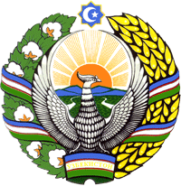

Ko'chmas mulk obyektlariga bo'lgan huquqlarning davlat reyestri
YERDAN FOYDALANUVCHINI HISOBGA
OLISH BO'YICHA
MA'LUMOTNOMA
Sana: 06.05.2025
№: 1730206/Y-24001006
1. Ko‘chmas mulk obyekti:
| Turi | Dehqon xo‘jaligi |
|---|---|
| Nomi | |
| Kadastr raqami | 15:08:000014393 |
| Manzil | Farg‘ona viloyati , Qo‘shtepa tumani |
| Reyestrning tartib raqami: | 1730206/Y-24001006 |
2. Hisobga olindi:
| JSHSHIR | 42708654150089 |
|---|---|
| Subyekt: | KODIROVA ODINAXON MALLAYEVNA |
2.1 Yer uchastkasi:
| Huquq turi: | Kadastr hisobiga olingan sana: | Kadastr hisobiga olish uchun asos hujjati:i | Amaldagi maydon (ga): |
|---|---|---|---|
| Qishloq xo'jaligi yerlaridan foydalanuvchi | 06.05.2025 | 06.05.2025-yildagi №QSTT05910714 - Yerni inventarizatsiya qilish to'g'risidagi akt | 0.30 |
Davlat Reyestri serverida texnik ishlar olib borilayotgan vaqtda rasmiy ma'lumotnomalarni taqdim etish 36 soatgacha cho'zilishi mumkin.
Elektron xizmatlar
ULUSH KIRITISH ASOSIDA ISHTIROK ETISH SHARTNOMASI
Davlat ro'yxatidan o'tkazish xizmati
OBYEKTNING ESKI KADASTR RAQAMI
Yangi kadastr raqamini aniqlash
ARIZA VA SHIKOYLARNI KO'RIB CHIQISH XIZMATI
Elektron arizalar bilan ishlash